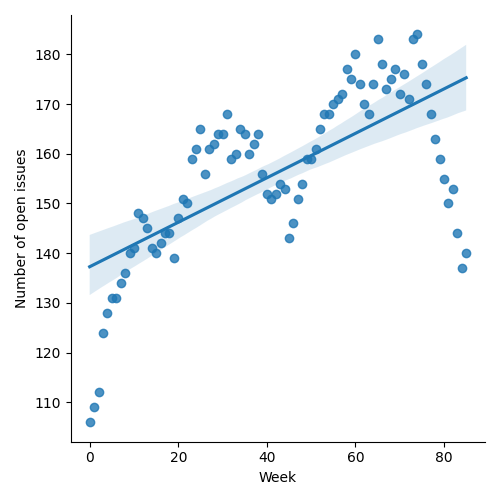
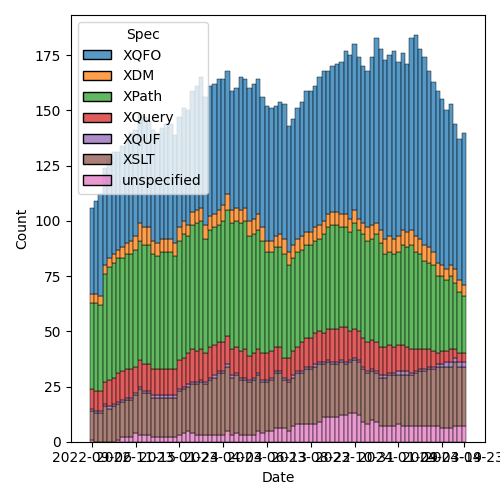
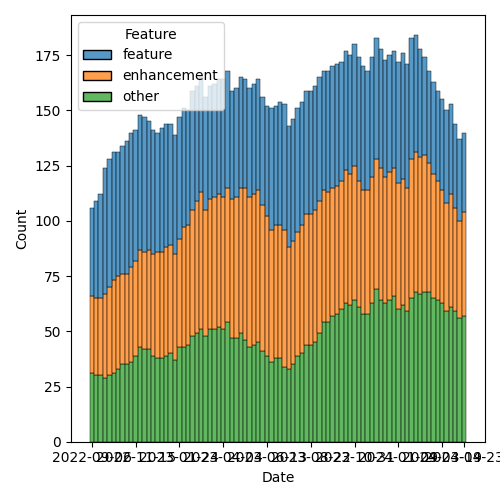

QT4 CG Meeting 075 Minutes 2024-04-30
Table of Contents
- Draft Minutes
- Summary of new and continuing actions
[0/5] - 1. Administrivia
- 2. Technical Agenda
- 2.1. PR #1177: 1162 Positional variables are xs:integer not xs:positiveInteger
- 2.2. PR #1174: 1173 array:build, map:build: Positional access
- 2.3. PR #1168: 1166 Clarify rule on invalid option keys
- 2.4. PR #1148: 1143 Coercion rules: handle choice types before atomization
- 2.5. PR #1117: 1116 Add options param to unparsed-text
- 2.6. PR #1087: 1086 Editorial changes to array:values
- 3. Any other business
- 4. Adjourned
Meeting index / QT4CG.org / Dashboard / GH Issues / GH Pull Requests
Draft Minutes
Summary of new and continuing actions [0/5]
[ ]QT4CG-063-06: MK to consider refactoring the declare item type syntax to something like declare record[ ]QT4CG-071-06: NW to clarify the cases that are distinguished by the leading empty string in path segments[ ]QT4CG-072-03: NW to clarify the round-tripping of URIs[ ]QT4CG-073-01: NW to proceed with the records/options proposal and make a PR.[ ]QT4CG-075-01: MK to drop the deterministic option and raise it as a separate issue.[ ]QT4CG-075-02: MK to define sequence-concatenation more formally with links where appropriate[ ]QT4CG-075-03: CG to make changes tomap:valuesanalagous to MK’s changes toarray:values
1. Administrivia
1.1. Roll call [10/12]
Regrets: JLO
[X]Reece Dunn (RD) [x:15-][X]Sasha Firsov (SF)[X]Christian Grün (CG)[ ]Joel Kalvesmaki (JK)[X]Michael Kay (MK)[ ]Juri Leino (JLO)[X]John Lumley (JLY)[X]Dimitre Novatchev (DN)[X]Wendell Piez (WP)[X]Ed Porter (EP)[X]C. M. Sperberg-McQueen (MSM)[X]Norm Tovey-Walsh (NW). Scribe. Chair.
1.2. Accept the agenda
Proposal: Accept the agenda.
Accepted.
1.2.1. Status so far…

Figure 1: “Burn down” chart on open issues

Figure 2: Open issues by specification

Figure 3: Open issues by type
1.3. Approve minutes of the previous meeting
Proposal: Accept the minutes of the previous meeting.
Accepted.
1.4. Next meeting
The next meeting is scheduled for Tuesday, 7 May 2024.
JLY gives regrets. NW gives regrets, MSM to chair.
1.5. Review of open action items [3/7]
[ ]QT4CG-063-06: MK to consider refactoring the declare item type syntax to something like declare record[ ]QT4CG-071-06: NW to clarify the cases that are distinguished by the leading empty string in path segments[ ]QT4CG-072-03: NW to clarify the round-tripping of URIs[ ]QT4CG-073-01: NW to proceed with the records/options proposal and make a PR.[X]QT4CG-074-01: MK to remove default values from variadic arguments[X]QT4CG-074-02: DN to create an issue about allowing function arguments to have default values[X]QT4CG-074-03: MK to add variadic functions to the XSLT specification
1.6. Review of open pull requests and issues
1.6.1. Merge without discussion
The following PRs are editorial, small, or otherwise appeared to be uncontroversial when the agenda was prepared. The chairs propose that these can be merged without discussion. If you think discussion is necessary, please say so.
Proposal: Merge without discussion.
Accepted.
1.6.2. Close without action
It has been proposed that the following issues be closed without action. If you think discussion is necessary, please say so.
- Issue #553: New function fn:substitute()
Proposal: Close without further action.
Accepted.
2. Technical Agenda
2.1. PR #1177: 1162 Positional variables are xs:integer not xs:positiveInteger
See PR #1177
- MK: This rolls back to using xs:integer for positional variables.
- MSM: They are always positive (or non-negative) integers. So this is just about consistency.
- MK: Yes, but also in what type annotations we assign to the variables.
- MSM: And interactions with other rules.
Proposal: Accept this PR.
Accepted.
2.2. PR #1174: 1173 array:build, map:build: Positional access
See PR #1174
- CG: This is a minor one. We have a bunch of functions with optional positional
argumements. I’ve added that in places where it was missing.
- … I’ve done this for
array:buildandmap:build.
- … I’ve done this for
- MSM: How are
$nameand$posare bound how? - CG: The names are up to you.
- MSM: So I could use any name I wanted?
- CG: Yes.
- MK: You have to supply a function with the right signature, but the names aren’t part of the signature.
- DN: We are starting to use abbreviations, this is a little bit concerning. If the reader isn’t a native speaker of English, sometimes the abbreviations can be hard to understand. I think I previously raised the problem that we shouldn’t mechanically put this new position argument everywhere. For example, for folds, this is meaningless. A few languages, like JavaScript, have put a position argument in fold. But I didn’t find any places where the argument was useful.
- CG: I just had a user that was using position in a fold. I asked them why and the reason is because it’s available in JavaScript.
Some discussion of the use of position in fold.
- JLY: Related to this, in anonymous functions, can you use named arguments?
- … For example, if I’d used
$keysin this example.
- … For example, if I’d used
- MK: Not in dynamic function calls.
- CG: That’s currently being discussed, but it would have many implications.
- SF: The same callbacks could be reused multiple times. Keeping the signatures the same across different collection methods is key for reusability.
- MK: Anyone who’s used XSLT in the last 25 years has almost certainly used the
position()function inside a for-each. We’ve all encountered places where you want to iterate and know the position. It’s hard to anticipate if there’s a use case for this particular function, but if you leave it out, someone will want it.- … With respect to map order, here we’re iterating over a sequence. The argument to map-build is a sequence, so there is an order.
Proposal: Accept this PR.
Accepted.
2.3. PR #1168: 1166 Clarify rule on invalid option keys
See PR #1168
- MK: This is a minor wording change to make the rules clear.
MK revues the change to item 5 in the list.
- MK: Implementors can add ordinary string options if they want, but they risk other rejecting it. If you want to avoid that, use QNames with a namespace.
MK reviews another change that CG highlighted, in bullet 8, clarifying when arrays are allowed.
Proposal: Accept this PR.
Accepted.
2.4. PR #1148: 1143 Coercion rules: handle choice types before atomization
See PR #1148
- MK: This PR is still blocked. I’ve spent an hour or two trying to unblock it.
It’s blocked by conflicts and there seem to be deeper semantic issues. The
structure and ordering and vocabulary wasn’t clear enough.
- … I’ll bring it back next week.
2.5. PR #1117: 1116 Add options param to unparsed-text
See PR #1117
- MK: Fair warning, I made a change to this PR this morning…
MK reviews the changes to fn:unparsed-text(). Changes are to the second argument.
- MK: There’s some room for discussion on the new
deterministicoption.- … In a deterministic implementation, you have to cache.
- NW: Seems odd to add it here when it would be just as useful on things like
fn:doc(). - MK: Yes, the idea is to do this in more places.
- JLY: Does this implementation determines that it’s false, does that mean you can’t inline it?
- MK: If deterministic is true, you have to deliver consistent results, but all bets are all off if you specify deterministic is false.
- RD: You could treat deterministic=false as determinstic=true but not vice-versa.
- DN: I understand what deterministic means here, but it’s totally confusing. From all other definitions of deterministic it’s about the function.
- MK: No, that is what it means.
- DN: It isn’t the function that’s deterministic, …
Some discussion about what deterministic means in this case. There’s confusion about the phrasing of “multiple calls” in the table.
- CG: I think it’s a good idea to make the function non-deterministic by default.
- … I’m not sure I like having deterministic as an option that you can’t resolve until runtime.
- … I also think it’s confusing if you create a function that uses different values for deterministic. It’s not clear what happens if you call it once with true and then again with false.
- … Determinism has also always been a low-level property of functions. It seems like a very essential change to make this dynamic. Couldn’t there be other ways to do this? If we had a more global approach, then we could have all the functions effected.
- MK: There are some very good arguments there. I do think there are use cases
that depend on the resource you’re using. You might want reading a lookup
table of tax rates to be deterministic where reading something else you want
it to be non-deterministic. I think there are use cases for a
resource-by-resource basis.
- … I accept that making it completely dynamic like this, we have to address what it means for different calls that have different values for deterministic.
- … With respect to the default, I went with the conservative approach.
- CG: Would it be possible to have different functions?
- MK: Mulitiplying the number of functions that way doesn’t enormously appeal to me. You could have a modifier function to get non-deterministic variants.
- DN: We’ll have the same problem with any function that produces results from the outside world. This is probably not the best name. Maybe “repeatable result” or something. “Mutable” or “immutable.”
- WP: Isn’t this the same or opposite of memoizable?
- MK: That’s slightly different in that if you have a deterministic function, then memoization only effect it’s performance.
- RD: The way that this is solved in databases like MarkLogic is through
transactions. A commit-rollback style approach. Anything within a given
transaction is set in stone for the duration of that transaction.
- … Does it make sense to consider if determinism can be sorted out at a broader level rather than function by function.
- DN: There are many options here.
- CG: Should we remove the deterministic option for now?
- MK: Reverting to the status quo and leaving it up to the implementor is probably best until we have a way forward.
- DN: I think that the right approach would be to have particular use cases and to try to find the right solution for them. For example, one use case is that this code posts to a resource and then access the resource and we want to see the result of the post reflected.
- JLY: The analogy I have is with current time. Saxon has two different versions, one that’s fixed and one that isn’t.
- EP: Maybe this would make more sense to be placed at the stylesheet or some sort of “phase” level so that you could control it across all the functions.
ACTION QT4CG-075-01: MK to drop the deterministic option and raise it as a separate issue.
Agreed.
2.6. PR #1087: 1086 Editorial changes to array:values
See PR #1087
- MK: I think this is pretty minor in comparison.
MK reviews the changes to array:values in the PR.
- MK: Very minor changes.
- CG: Maybe we should also do this to
map:values? We also want to try to harmonize them. - DN: In the summary, what does “sequence-concatenation” mean?
- MK: Yes, it should be a defined term.
- RD: It’s defined in XPath and XQuery.
- MK: Yes, it should be linked.
- CG: I wonder if we could add a note on the
$array*for usability.
ACTION QT4CG-075-02: MK to define sequence-concatenation more formally with links where appropriate
ACTION QT4CG-075-03: CG to make changes to map:values analagous to MK’s changes to array:values
Proposal: accept this PR
Accepted.
- RD: I don’t see a specific definition of the phrase “sequence-concatenation”. There’s discussion of the comma operator.
- MK: Making a formal definition is a bit tricky, but I’ll try.
3. Any other business
None heard.